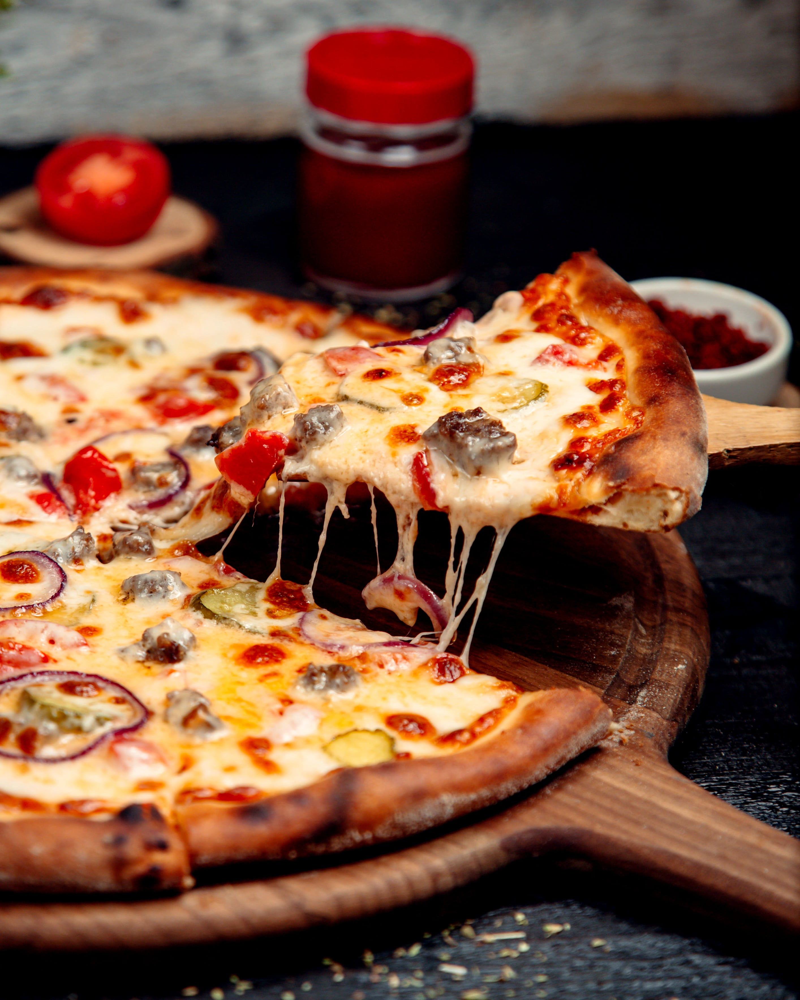

RECETAS DE PANADERÍA
La panadería es el arte de elaborar pan y otros productos de repostería mediante la combinación de ingredientes básicos como harina, agua, levadura y sal. Este proceso no solo transforma simples ingredientes en deliciosos panes, croissants, baguettes y más, sino que también guarda una rica tradición cultural y regional. Desde el crujido de una corteza dorada hasta la suavidad de un pan recién horneado, la panadería combina técnica, creatividad y pasión para ofrecer una experiencia culinaria única y satisfactoria.
PIZZA
Para hacer una pizza casera, empieza preparando la masa. Necesitarás 500 gramos de harina de trigo, 300 mililitros de agua tibia, 2 cucharaditas de sal, 1 cucharadita de azúcar y 2 1/4 cucharaditas de levadura seca (aproximadamente un sobre). También, tendrás que usar 3 cucharadas de aceite de oliva. Primero, mezcla la harina con la sal y el azúcar en un bol grande. Disuelve la levadura en el agua tibia y deja reposar durante unos 5 minutos hasta que se forme una espuma. Luego, añade esta mezcla de agua y levadura a la harina junto con el aceite de oliva. Mezcla hasta obtener una masa uniforme. Amasa la mezcla sobre una superficie ligeramente enharinada durante unos 10 minutos, hasta que la masa esté suave y elástica. Coloca la masa en un bol ligeramente aceitado, cúbrela con un paño y déjala reposar en un lugar cálido durante 1-2 horas, o hasta que doble su tamaño.
Mientras la masa reposa, prepara la salsa. Necesitarás 400 gramos de puré de tomate, 2 dientes de ajo picados, 1 cucharadita de orégano seco y 1 cucharadita de albahaca seca. Agrega sal y pimienta al gusto y 1 cucharada de aceite de oliva. Calienta el aceite en una sartén, sofríe el ajo hasta que esté dorado y luego añade el puré de tomate junto con el orégano, la albahaca, la sal y la pimienta. Cocina a fuego lento durante unos 15 minutos, removiendo ocasionalmente. Deja enfriar la salsa.
Cuando la masa haya subido, precalienta el horno a 220°C (425°F). Extiende la masa sobre una superficie enharinada hasta que alcance el grosor deseado y transfíerela a una bandeja para pizza o piedra de hornear. Unta una capa generosa de la salsa sobre la masa, luego espolvorea 200 gramos de queso mozzarella rallado y 100 gramos de queso parmesano rallado. Agrega los ingredientes que prefieras, como pepperoni, champiñones, pimientos o aceitunas.
Hornea la pizza durante 15-20 minutos, o hasta que la corteza esté dorada y el queso esté burbujeante y dorado. Deja enfriar la pizza durante unos minutos antes de cortarla en porciones. ¡Y listo, disfruta de tu pizza casera!
PAN DE JAMON
Para preparar un delicioso pan de jamón, comienza con la masa. Necesitarás 500 gramos de harina de trigo, 10 gramos de sal, 60 gramos de azúcar, 15 gramos de levadura fresca (o 7 gramos de levadura seca), 2 huevos, 100 gramos de mantequilla y 200 ml de leche tibia. Primero, disuelve la levadura en la leche tibia y déjala reposar durante unos 10 minutos hasta que se active. En un bol grande, mezcla la harina con la sal y el azúcar. Forma un hueco en el centro y añade los huevos batidos y la levadura activada. Mezcla bien hasta formar una masa. Amasa durante unos 10 minutos hasta que la masa esté suave y elástica, luego incorpora la mantequilla en trozos pequeños y sigue amasando hasta que se integre completamente. Cubre la masa con un paño y deja reposar en un lugar cálido durante 1-2 horas, o hasta que doble su tamaño.

Mientras la masa está reposando, prepara el relleno. Necesitarás 200 gramos de jamón cocido en rebanadas finas, 100 gramos de tocino (o panceta) también en rebanadas finas, y 100 gramos de aceitunas verdes o negras, deshuesadas y picadas. Una vez que la masa haya reposado y duplicado su tamaño, estírala sobre una superficie ligeramente enharinada hasta obtener un rectángulo. Unta una capa fina de mostaza sobre la masa (opcional) y distribuye el jamón, el tocino y las aceitunas de manera uniforme sobre la superficie.
Enrolla la masa con el relleno en un cilindro apretado y asegúrate de sellar bien los bordes. Coloca el pan enrollado en una bandeja para hornear engrasada y déjalo reposar durante 30 minutos para que suba nuevamente. Mientras tanto, precalienta el horno a 180°C (350°F). Antes de hornear, pinta el pan con un huevo batido para darle un acabado dorado.
Hornea durante 30-35 minutos, o hasta que el pan esté dorado y suene hueco al golpearlo ligeramente en la base. Deja enfriar sobre una rejilla antes de cortarlo en rodajas. ¡Disfruta de este exquisito pan de jamón, perfecto para cualquier ocasión!
CACHITOS
Para hacer cachitos de jamón, empieza preparando la masa. Necesitarás 500 gramos de harina de trigo, 10 gramos de sal, 60 gramos de azúcar, 15 gramos de levadura fresca (o 7 gramos de levadura seca), 2 huevos, 100 gramos de mantequilla y 200 ml de leche tibia. Disuelve la levadura en la leche tibia y déjala reposar durante 10 minutos hasta que se active. En un bol grande, mezcla la harina con la sal y el azúcar. Forma un hueco en el centro y añade los huevos batidos y la levadura activada. Mezcla bien hasta obtener una masa. Amasa durante unos 10 minutos hasta que la masa esté suave y elástica. Luego, incorpora la mantequilla en trozos pequeños y sigue amasando hasta que se integre completamente. Cubre la masa con un paño y deja reposar en un lugar cálido durante 1-2 horas, o hasta que duplique su tamaño.

Mientras la masa está reposando, prepara el relleno. Necesitarás 200 gramos de jamón cocido, finamente picado o en pequeños cubos, 100 gramos de queso rallado (puede ser queso mozzarella o el de tu preferencia), y 50 gramos de aceitunas verdes o negras, deshuesadas y picadas (opcional). Una vez que la masa haya reposado y duplicado su tamaño, estírala sobre una superficie ligeramente enharinada hasta formar un rectángulo. Corta la masa en pequeños cuadrados de aproximadamente 10 cm por lado. En el centro de cada cuadrado, coloca una porción del relleno de jamón, queso y aceitunas.
Dobla los bordes de cada cuadrado hacia el centro para envolver el relleno, formando un pequeño paquetito o triángulo. Coloca los cachitos en una bandeja para hornear ligeramente enharinada y deja reposar durante 30 minutos para que suban un poco más. Mientras tanto, precalienta el horno a 180°C (350°F). Antes de hornear, pinta los cachitos con un huevo batido para obtener un acabado dorado y brillante.
Hornea durante 15-20 minutos, o hasta que los cachitos estén dorados y cocidos en el centro. Déjalos enfriar un poco sobre una rejilla antes de servir. ¡Disfruta de estos deliciosos cachitos de jamón, perfectos para el desayuno, la merienda o cualquier ocasión especial!